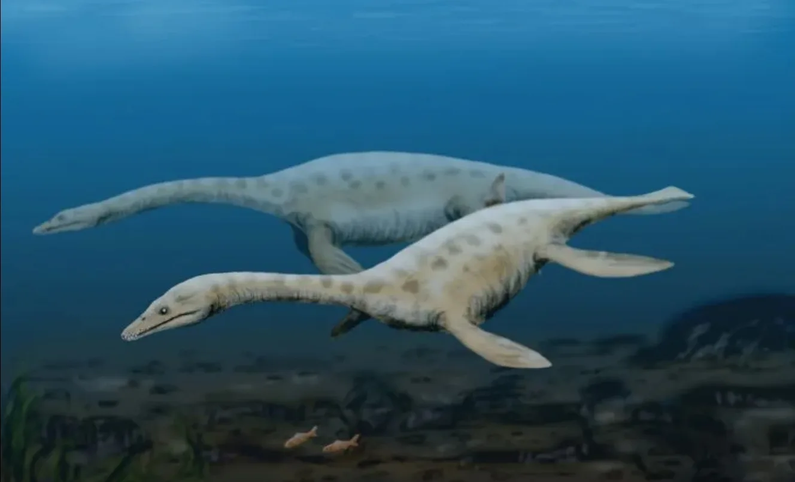
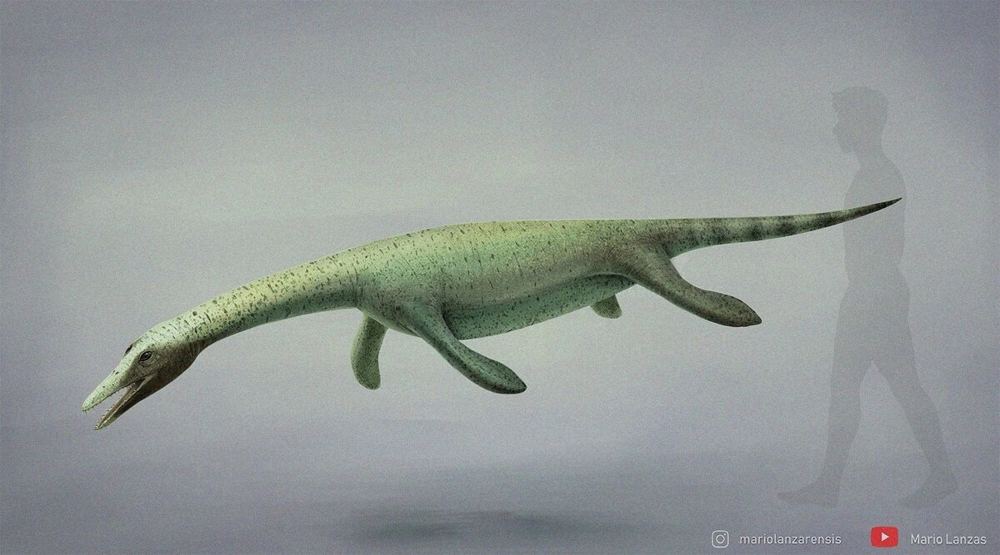
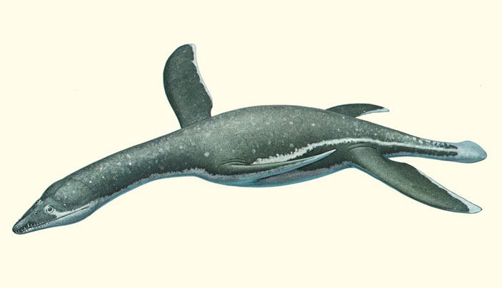
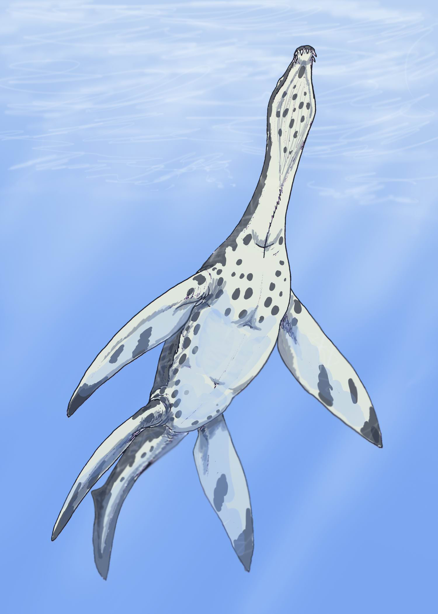
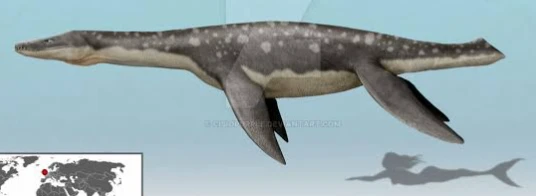
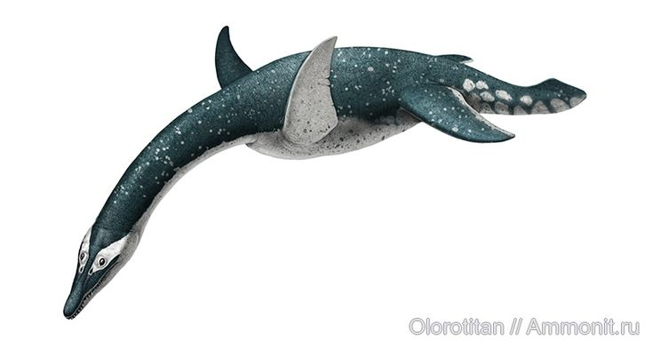
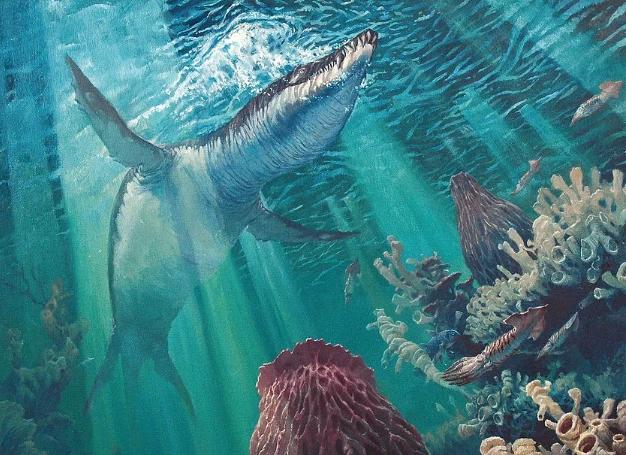
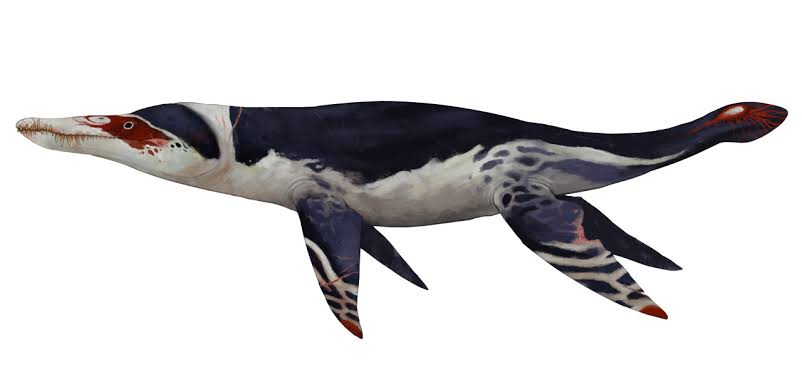
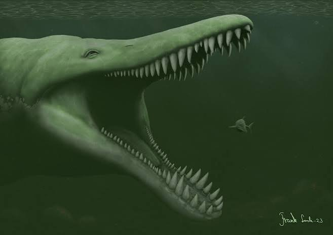

Пистозавр августазавр

Сам пистозавр

Строение скелета пистозавров
Плиозавроиды-группа морских рептилий из отряда плезиозавров, они жили примерно 205-90 миллионов лет назад. Они вероятнее всего произошли от пистозавров - группы триасовых морских рептилий, пистозавры имели конечности, полностью обращённые в ласты, длинную шею и питались в основном рыбой и моллюсками.

Пистозавр августазавр

Сам пистозавр
Строение скелета пистозавров

Плиозавроид ромалеозавр

Ромалеозаврид мейеразавр

Скелетал ромалеозавра

Ромалеозаврид атиходракон

Ромалеозаврид макроплата
В конце юрского периода плиозавры достигли колоссальных размеров и заняли ниши суперхищников, они отняли эту нишу у господствующих ранее ихтиозавров, некоторые представители плиозаврид могли достигать более 10 метров в длину! Зубы у макрохищных плиозавров были округлые в поперечном сечении и имели бороздки вдоль всей длины, такая форма была идельна для вспарывания большой туши жертвы, переламывания костей и отрывания кусков мяса, а у некоторых зубы были 3-хгранные, они тоже подходили для охоты на крупную добычу. Самые крупные зубы плиозавров с корнем могли достигать 40 сантиметров в длину!
Плиозаврид симолест

Плиозаврид лиоплевродон

Плиозаврид плиозавр

Плиозавр Русский